User guide
Andromon user guide
One guide for both apps: Andromon on your Windows, macOS or Linux computer and Andromon Companion on your Android phone. It shows every page and screen and explains what each option does.
- Andromon 0.1.0
- Companion 0.33.0
- Press / to search
Part 1Getting started
How the two apps work together
Andromon is two apps that work as one.
Manages the phone from the computer: messages, contacts, files, photos, apps, the phone's screen and more.
Reads what Android only gives to apps on the phone, and has phone-care tools you use on the phone itself.
- Andromon talks to the phone over adb, the debugging link built into Android (a USB cable, or Wireless debugging on Android 11 and newer). Nothing has to be installed on the computer besides Andromon.
- Pages that work with Android directly (Files, Apps, Controls, Screen mirror, Screenshot, Shell…) need nothing on the phone.
- Android only lets apps on the phone read SMS, contacts, the call log, the calendar and notifications. The companion is that app: Andromon asks, the companion reads and answers. The pages that need it (Messages, Contacts, Call log, Calendar, Notifications, Photos, Music) are marked Companion in this guide.
- Andromon offers to install the companion the first time you open one of these pages; you click Install companion once.
- The companion checks that each request comes from adb. Other apps on the phone, and other devices on the network, can't talk to it.
- While a computer is linked, the phone shows a "Connected to Andromon" notification. The link stops when you press Stop on it, switch it off on the PC link screen, or after 15 idle minutes.
- The companion's phone-care tools (memory, cleaner, battery, freezer, network tests, storage, permissions, hardware test) work on their own, without a computer. A few of them can do more with privileged access.
The screenshots were taken with an Android 12 emulator and made-up sample data.
Connecting a phone
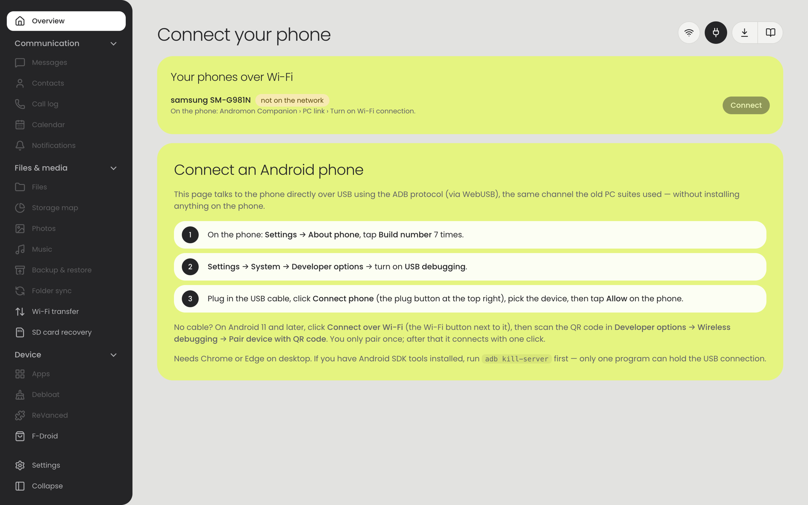
With a USB cable
- On the phone: Settings › About phone, tap Build number 7 times. This switches on Developer options.
- Settings › System › Developer options: turn on USB debugging.
- Plug in the cable, click Connect phone (the plug button at the top right), pick the phone, then tap Allow on the phone. Tick "Always allow from this computer" to skip this next time. After the first time, Andromon connects by itself as soon as the phone is plugged in, or when it opens with the phone already plugged in. While the phone is connected, Andromon closes adb in other programs (Android SDK, Android Studio, scrcpy) so nothing else can use the phone. Both can be turned off in Settings › Phone link.
Without a cable (Android 11 and newer)
| Way | Steps |
|---|---|
| Easiest | Connect once with the cable and click Use this phone without the cable on the Overview. Afterwards, turn on the Wi‑Fi connection in the companion (PC link › Wi‑Fi) and the phone appears under Your phones over Wi‑Fi. |
| QR code | Click Connect over Wi‑Fi. On the phone: Developer options › Wireless debugging › Pair device with QR code, and scan the code Andromon shows. |
| 6-digit code | In the same window, choose Pair with a 6-digit code and type the address and code from the phone's Pair device with pairing code screen. |
| By address | Connect by address: type the IP address and port from the Wireless debugging screen. For networks that hide devices from each other. |
You pair only once. The computer and the phone must be on the same Wi‑Fi.
The dot next to "Andromon" in the sidebar is green while a phone is connected. Disconnect (top right) ends the session.
Getting the companion app
You don't install it yourself. Connect the phone to Andromon with the USB cable and open Messages, Contacts, Call log, Photos or Music there; Andromon offers Install companion and does the rest, including the permissions. Installing this way matters: Android refuses the SMS and call-log permissions for apps installed by tapping an APK file.
Part 2On the computerAndromon
The window
- Sidebar: the pages, in four groups. Click a group's heading to fold it; Developer starts folded. Pages that need a phone are greyed out until one is connected. Wi‑Fi transfer, F-Droid and Settings work without a phone.
- Collapse (bottom of the sidebar, or Ctrl/⌘ + B) shrinks the sidebar to icons.
- Downloads button (the arrow at the top right) lists what Andromon is downloading or has downloaded: the ReVanced tools, the F-Droid catalogue and apps, the debloat list.
- A spinning circle in the top bar means Andromon is talking to the phone.
- Buttons that delete or change something important ask twice: the first click turns the button into Confirm?, the second click does it.
Overview
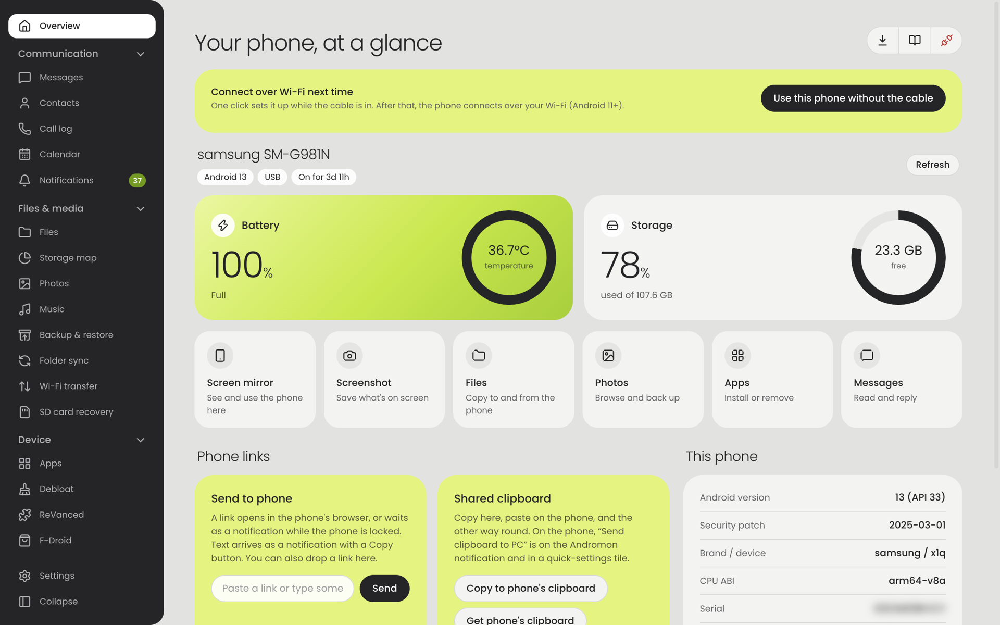
| Part | What it shows or does |
|---|---|
| Name and chips | The phone's model, Android version, how it is connected (USB or Wi‑Fi) and how long it has been on. |
| Battery and Storage cards | Charge level, temperature and charging state; used and free space. |
| Shortcuts | One click to Screen mirror, Screenshot, Files, Photos, Apps and Messages. |
| This phone | Android version, security patch, device, processor type, serial number, screen size. Click a row to copy its value. |
| Phone links Companion | Now playing on phone (cover, play/pause, next/previous, seek), Send to phone (a link or text opens on the phone or arrives as a notification), Shared clipboard (copy to the phone's clipboard, or fetch the phone's), Find my phone (rings at full volume for up to 2 minutes, even on silent). |
| Use this phone without the cable | The one-time Wi‑Fi setup described above. |
Refresh reads everything again.
Communication
Messages Companion
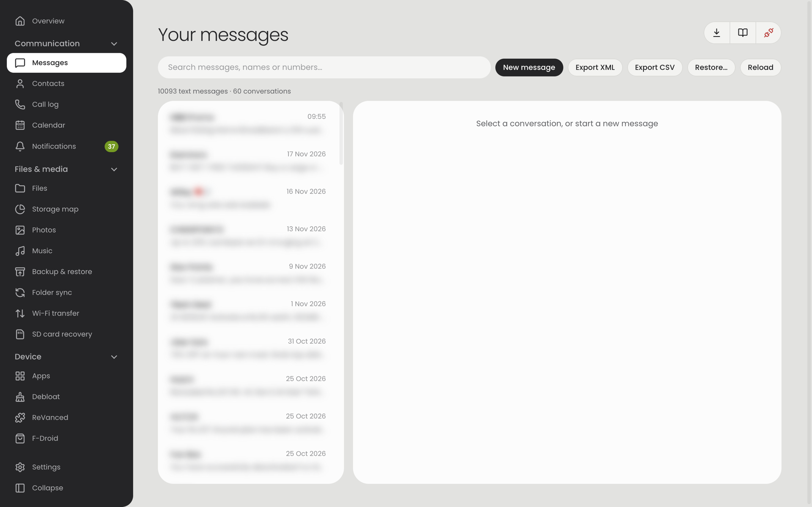
- The left column lists conversations (SMS and MMS together), newest first. Click one to read it; pictures in MMS open or save with a click.
- Search looks through texts, names, numbers and attachment names.
- Type at the bottom and click Send to reply. The message is sent by the phone as a normal SMS, so your usual SMS charges apply. Sending MMS is not supported.
- New message starts a conversation with any number.
- Export XML saves all messages in the format the "SMS Backup & Restore" app uses; Export CSV saves a spreadsheet file.
- Restore… reads such an XML file, shows what it holds and adds the text messages that aren't on the phone yet.
Contacts Companion
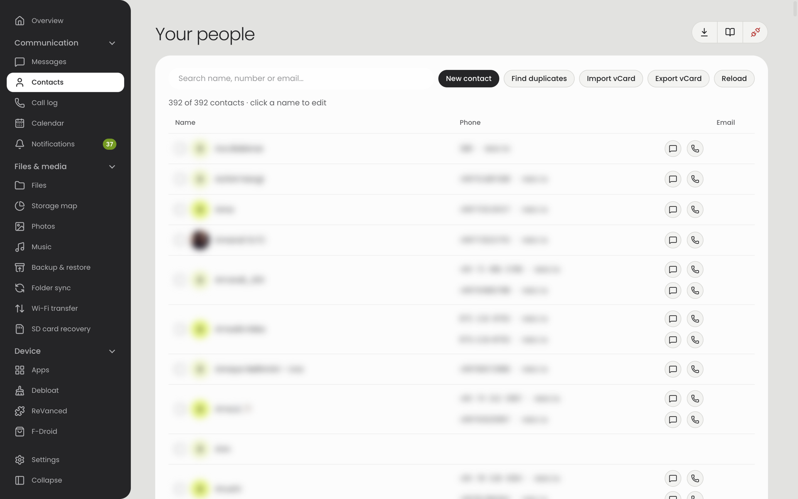
- Click a name to edit it: name, numbers, e‑mail addresses, company, birthday, note, favourite, photo.
- New contact adds one. Tick contacts to delete several at once.
- Find duplicates groups contacts that share a phone number, e‑mail address or name. For each group you choose which one to keep; the others' details are merged into it.
- Import vCard / Export vCard move contacts in and out as
.vcffiles, photos included. Import can skip contacts that already exist. - Call dials the number on the phone (click twice to confirm).
Call log Companion
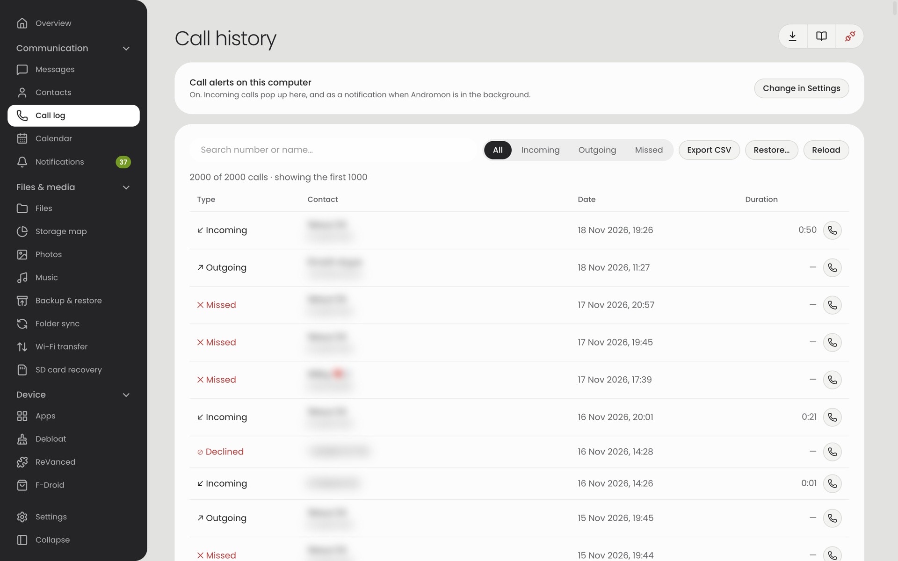
- Filter by All / Incoming / Outgoing / Missed, search by number or name.
- Export CSV saves the list; Restore… adds the calls from such a file that aren't in the log yet.
- Call alerts on this computer (the switch at the top): while a phone is connected, incoming calls pop up in Andromon with Answer, Decline and Silence. Answering picks up on the phone; you still talk on the phone. Missed calls stay on screen with Call back and Message.
Calendar Companion
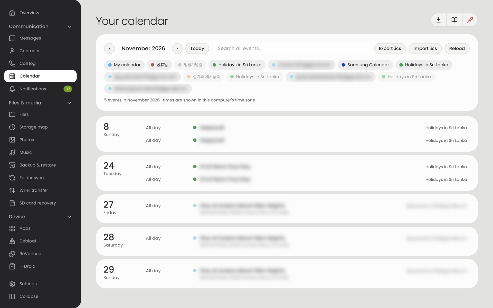
- Shows the phone's calendars one month at a time; the arrows change the month, Today jumps back.
- Switch individual calendars on and off, search all events, click an event for its details.
- Export .ics saves the calendars that are switched on. Import .ics adds events to a calendar you choose, or to a new calendar kept only on the phone.
Notifications Companion
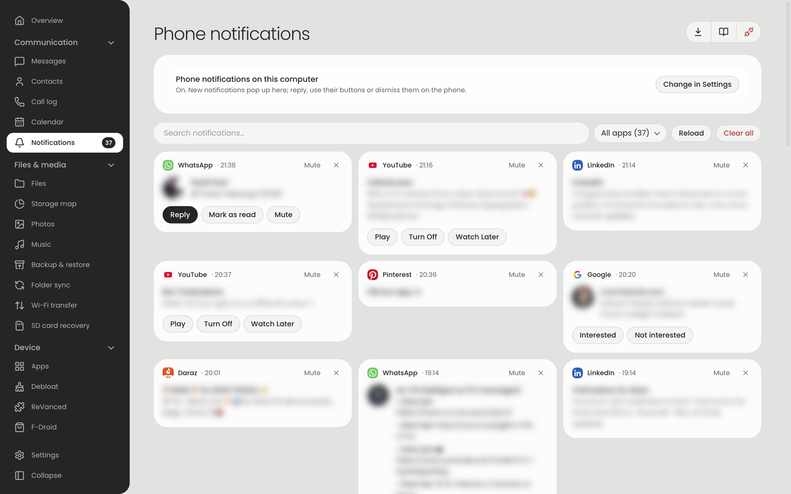
- Off until you turn on Phone notifications on this computer. Andromon then gives the companion Android's "Notification access".
- Every notification on the phone (chat apps, SMS, e‑mail…) appears here and as a pop-up.
- Reply from the computer where the app supports it, press the notification's own buttons ("Mark as read"…), dismiss one or clear all.
- Mute pop-ups per app, search, and filter by app.
Files & media
Files
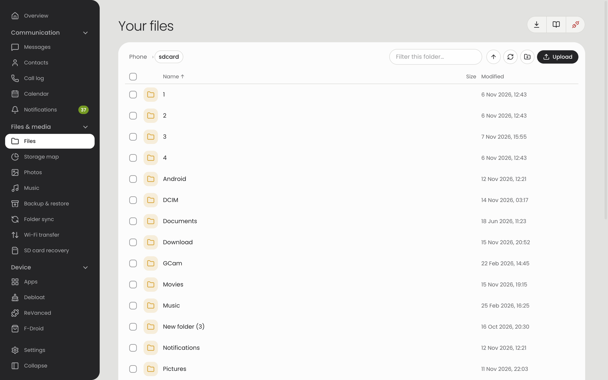
Browse the phone's storage starting at /sdcard. Click a folder to open it, Up to go back. Files can be downloaded to the computer or deleted, and Upload here copies files from the computer into the open folder.
Photos Companion
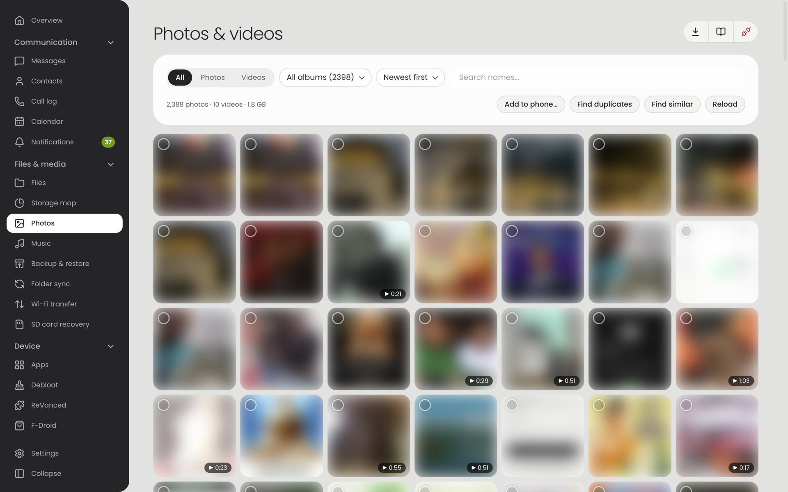
- Filter by All / Photos / Videos and by album, sort by date or size, search by name.
- Click a picture to view it full screen (← → keys move on).
- Click the circle on a thumbnail (or Ctrl/⌘-click) to select. Selected items can be copied to a folder on the computer or deleted.
- Add to phone… puts pictures from the computer into the album you are viewing; they show up in the phone's gallery at once.
- Find duplicates finds identical files and keeps the oldest copy.
Music Companion
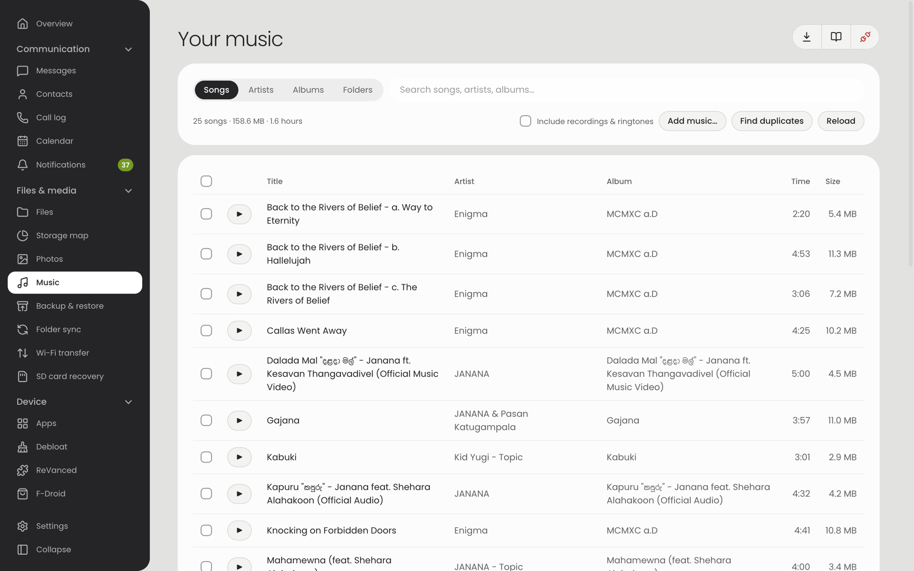
Tabs for Songs, Artists, Albums and Folders. Click a song to play it on the computer. Select songs to copy them to the computer or delete them. Add music… copies songs to the phone. Include recordings & ringtones widens the list. Find duplicates works as in Photos.
Backup & restore Companion
A page with three cards.
| Card | What it does |
|---|---|
| Back up this phone | Tick what to save: contacts, messages, call log, calendar, the list of apps, app installers, photos and videos. Back up now writes them into a new dated folder on the computer. Nothing on the phone is changed. |
| Restore from a backup | Restore from a backup… opens a backup folder, shows what it holds and lets you pick the parts to put back. Only what isn't on the phone yet is added; nothing is deleted or replaced. Apps come back without their data. |
| Automatic photo copy | Shows whether new photos are copied to the computer each time the phone connects, and what the last copy did. The switch and its folder are in Settings › Phone link. |
Wi‑Fi transfer is described for both apps under Wi‑Fi file transfer.
Device
Apps
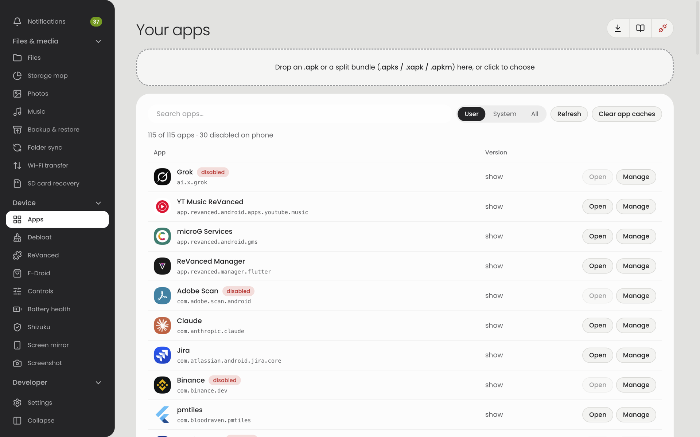
- User / System / All chooses which apps are listed; search by name or package.
- Install: drop an
.apk, several split.apkfiles, or an.apks/.xapk/.apkmbundle on the dashed box. A preview shows the app's name, version, required Android version, whether it fits the phone's processor, and its permissions before anything is installed. - Open starts the app on the phone.
- Manage opens a panel: version and install dates, force stop, clear data, disable / enable, export APK, uninstall, and switches for each runtime permission.
- Clear app caches frees the caches of all apps at once.
Debloat
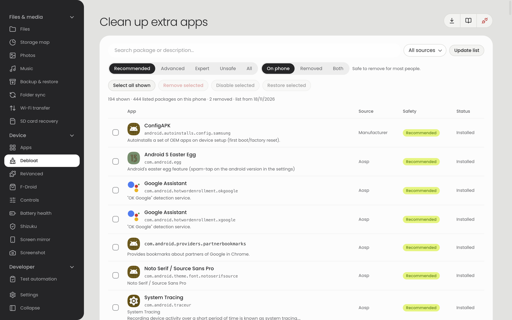
Removes apps that came pre-installed. Download the list fetches a community list (Universal Android Debloater Next Generation) that says what each pre-installed package does and how safe it is to remove.
| Option | Meaning |
|---|---|
| Recommended / Advanced / Expert / Unsafe | The list's safety rating. Start with Recommended. |
| Remove | Uninstalls the package for your user. The files stay on the system partition, so it can be restored. |
| Disable | Switches the package off without removing it. |
| Restore | Brings back a removed or disabled package. |
A factory reset also brings everything back.
ReVanced
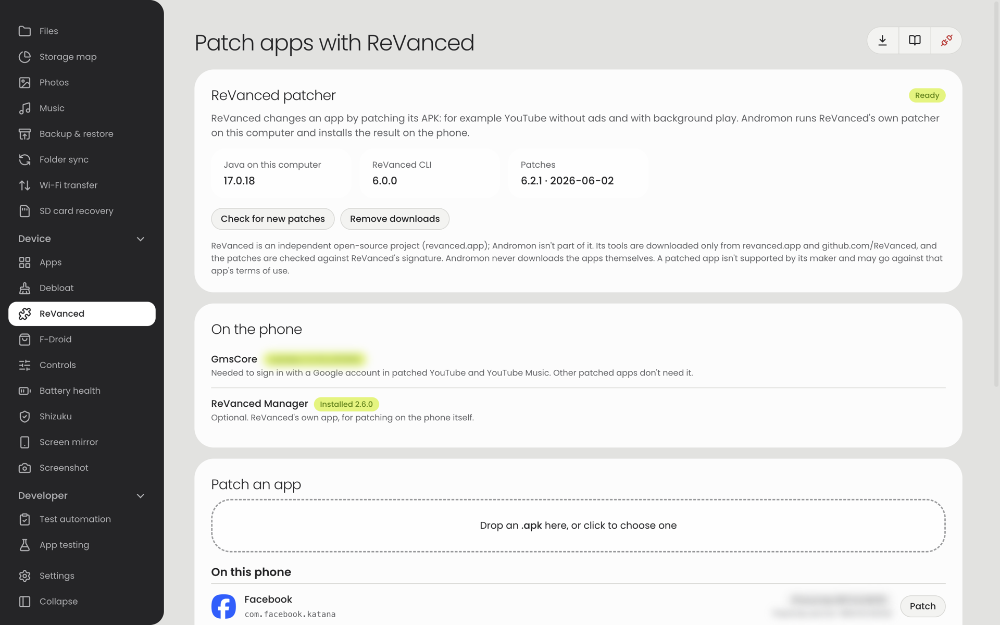
Patches an app with ReVanced on the computer and installs the result.
- Download the patcher (about 60 MB). Needs Java 17 or newer on the computer; the page tells you if it is missing.
- Choose an app from the phone, or drop an
.apkfile. - Tick the patches you want (ReVanced's own choice is pre-ticked) and set their options.
- Patch, then Install on the phone or Save the APK….
The page can also install GmsCore (needed to sign in with a Google account in patched YouTube) and ReVanced Manager. Apps the Play Store installed in several parts can't be taken from the phone: drop a full APK instead. Andromon never downloads the apps themselves.
F-Droid
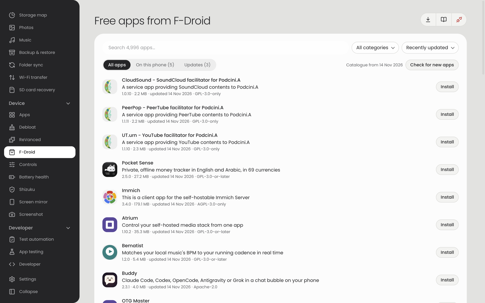
Browse and install free and open-source apps from F-Droid.
- Download the catalogue (about 25 MB) once; Check for new apps updates it later.
- Search, pick a category, sort by Recently updated / Newest / A to Z.
- Click an app for its screenshots, description, version, size, permissions, F-Droid's notes about it (ads, tracking…), every version and its links.
- Click a screenshot to see it at full size; the arrow keys or the ‹ › buttons step through, Esc closes. If an app shows no screenshots and the page says the catalogue is from before they were kept, press Check for new apps once.
- Install downloads the newest stable version that fits the phone and installs it.
- On this phone lists the phone's apps that F-Droid has. Updates lists those with a newer version; update one at a time or Update all.
- Without a phone you can still browse and Save the APK… to the computer.
An app installed from the Play Store is often signed with a different key than F-Droid's build. Android then refuses the update and nothing changes; the page says so.
Controls
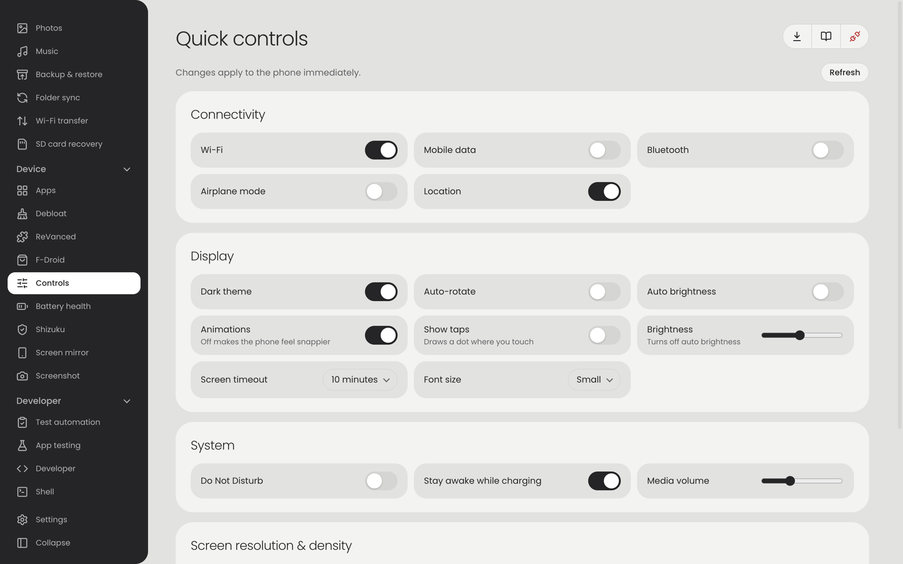
Switches for the phone's own settings. Every change applies to the phone at once.
| Group | Options |
|---|---|
| Connectivity | Wi‑Fi, mobile data, Bluetooth, airplane mode, location |
| Display | Dark theme, auto-rotate, auto brightness, brightness, animations, show taps, screen timeout, font size, resolution and DPI override (with reset) |
| System | Do Not Disturb, stay awake while charging, media volume |
| Power | Wake, lock, restart (normal, recovery, bootloader), power off |
Shizuku
Shizuku is a free app that lends other apps on the phone the rights of adb. The companion uses it so its Freezer, Memory and Battery saver work later without the computer. This page shows whether Shizuku is installed and running.
| Button | What it does |
|---|---|
| Start Shizuku | Starts Shizuku over the connection. It keeps running after you unplug, until the phone restarts; on a phone that isn't rooted, start it again after every restart. |
| Open Shizuku on the phone | Opens the Shizuku app on the phone's screen. |
| Get Shizuku | Shown when the phone doesn't have it: opens Shizuku's download page in your browser. |
| Check again | Reads the state again. |
After the first start, give the companion its permission: in the companion, Settings › Privileged access › Grant permission.
Below it on the same page is Phone RAM manager, Andromon's own helper for phones without Shizuku: it starts a small helper on the phone so the companion's Memory screen can list and stop apps. It lasts until the phone restarts.
Screen mirror
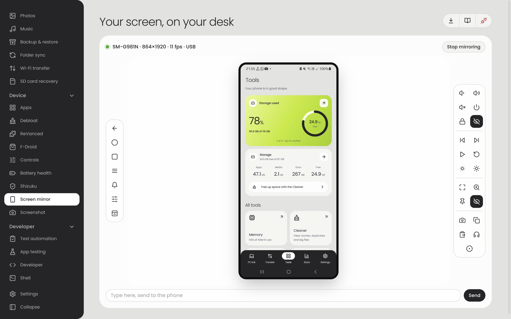
Shows the phone's screen live and lets you use it with the mouse and keyboard.
| Before starting | What it does |
|---|---|
| Quality | Fast (720p), Balanced (1080p) or Sharp (full resolution). Lower is smoother on a slow connection. |
| Show | The phone's screen, or its back or front camera (Android 12+). |
| Play the phone's sound here | Sends the phone's sound to the computer (Android 11+). |
| Turn the phone's screen off while mirroring | The phone's own display stays dark while you use it from the computer. |
While mirroring: click = tap, drag = swipe, wheel = scroll, right-click or Esc = Back, and typing goes to the phone. Text copied on either side is shared. The panel on the right has Back, Home, Recents, Vol −, Vol +, Power, Notifications, Rotate, Screen off, Save frame, Mute, Full screen and Record (saves an MP4 with picture and sound). Stop mirroring ends it.
Screenshot
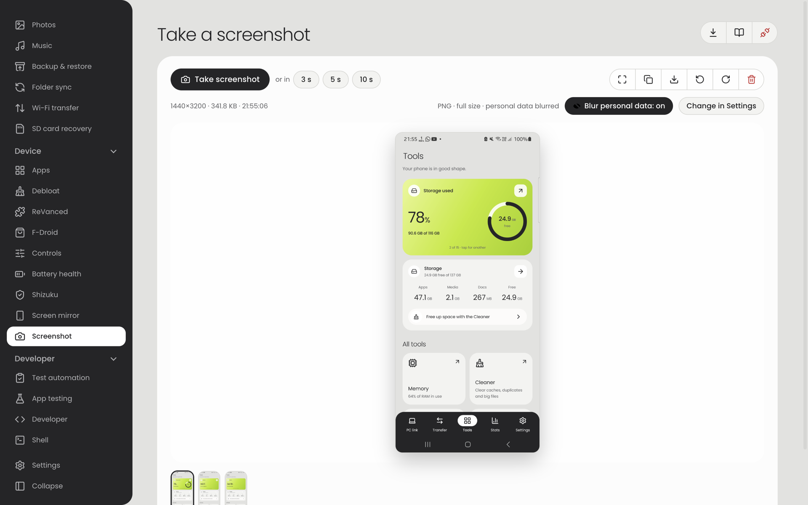
Take screenshot captures what is on the phone's screen; Save PNG saves it to the computer.
Developer
These pages are for people who build or test apps.
Test automation
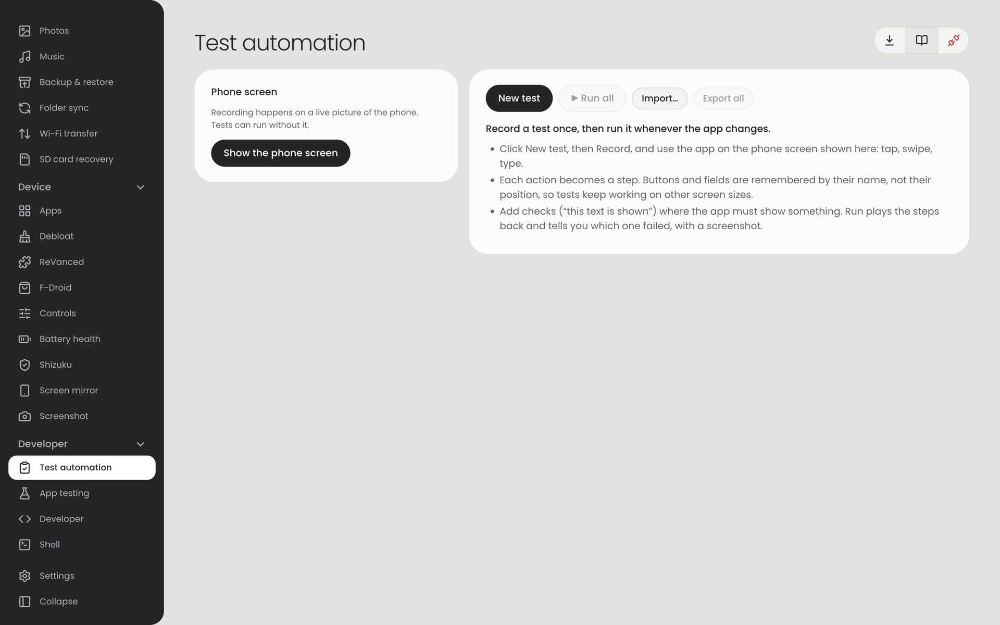
Record a test by using an app on the live phone picture (tap, long-press, swipe, type, Back/Home), then run it again whenever the app changes. Steps remember buttons by their name, not their position. You can add checks ("this text is shown"), waits and screenshots, edit and reorder steps, Run all, and export an HTML report or JUnit XML. Tests can be imported and exported as JSON.
App testing
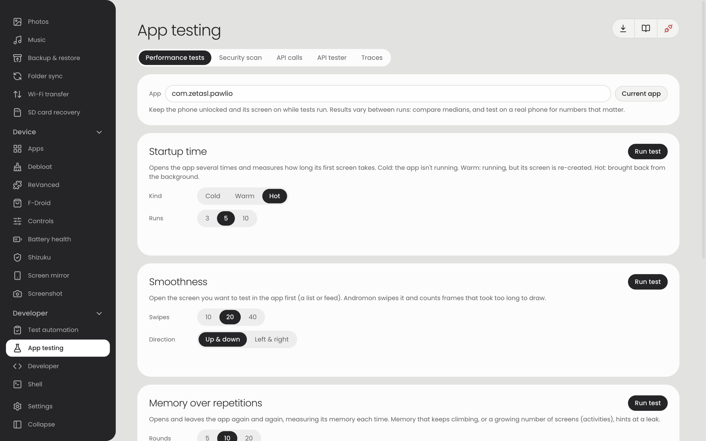
| Tab | What it does |
|---|---|
| Performance tests | Measures startup time (cold, warm, hot), scrolling smoothness and memory over repeated use, with limits and history. |
| Security scan | Checks an installed app or an APK file for common problems. |
| API calls | Shows the HTTP/HTTPS requests the phone makes, through a proxy on the computer. |
| API tester | Send requests yourself; keep them in collections with tests. |
| Traces | Perfetto traces, method traces and heap dumps. |
Developer
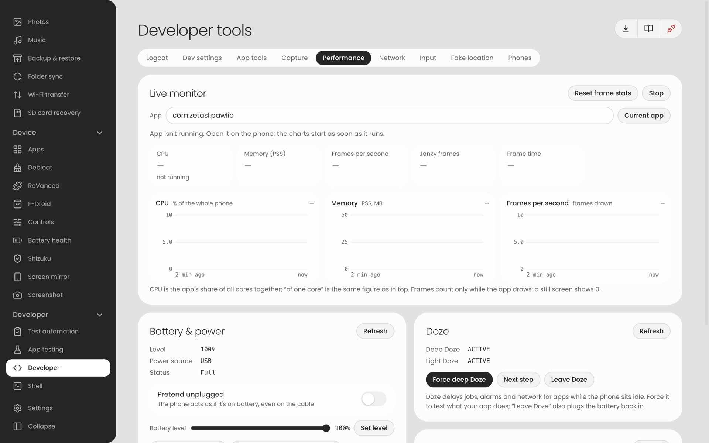
| Tab | What it does |
|---|---|
| Logcat | Live log with level filter, search, per-app filter, pause, save and a crash finder. |
| Dev settings | Android's developer options as switches. |
| App tools | Per app: permissions, save APK, intents and deep links, private storage. |
| Capture | Screen recordings and bug reports. |
| Performance | Live CPU, memory and frame graphs. |
| Network | Port forwarding and a proxy setting. |
| Input | Type text on the phone and press its keys. |
| Fake location | Pick a place on a map (or search for it) and make the phone report that position; show where the phone is now. The map and search come from OpenStreetMap, so they need internet. |
| Phones | Use several phones at once. |
Shell
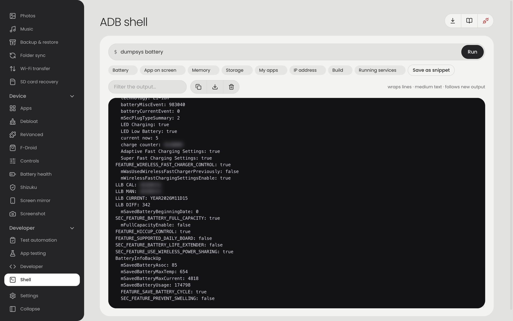
Runs any adb shell command and shows its output. The chips under the box are ready-made commands (battery, the app on screen, memory, storage…). Save as snippet keeps your own; ↑ and ↓ walk through earlier commands.
Settings
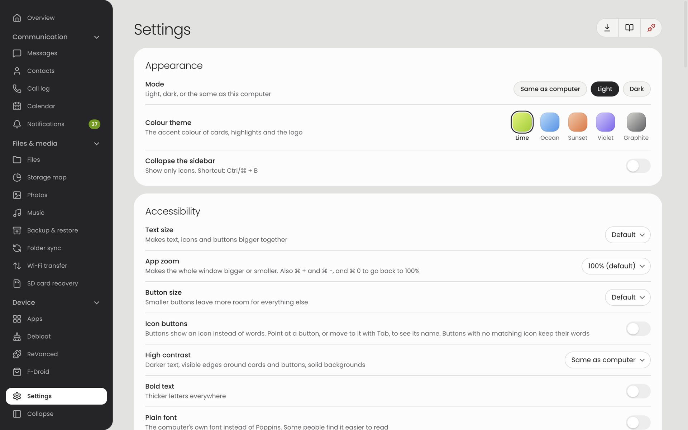
| Section | Option | What it does |
|---|---|---|
| Appearance | Mode | Light, dark, or the same as the computer. |
| Colour theme | Lime, Ocean, Sunset, Violet or Graphite: the colour of highlights, cards and the logo. | |
| Collapse the sidebar | Shows only icons (also Ctrl/⌘ + B). | |
| Phone link | Connect when a phone is plugged in | Connects without a click when a phone's cable is plugged in, and to a phone already plugged in when Andromon opens. A phone you disconnect yourself isn't connected again until it is unplugged. |
| Keep other programs off the phone | Desktop app. While a phone is connected, closes adb run by other programs (Android SDK, Android Studio, scrcpy, a terminal) and keeps closing it if it starts again. Never closes a browser (a WebADB tab is named so you can close it) or another copy of Andromon. Turn it off if you use Android Studio or adb alongside Andromon. | |
| Call alerts | Incoming calls pop up on the computer. | |
| Notification pop-ups | A pop-up for each new phone notification (when Notifications is on). | |
| Connect over Wi‑Fi automatically | Connects to a paired phone as soon as it appears on the network. | |
| Screen mirror | Picture quality, Show, sound, screen off, frame rate | The defaults used each time mirroring starts; the same choices as on the mirror page. |
| Saving files | Ask where to save each file | On: a save window for every screenshot, recording and export. Off: files go straight into one folder you choose. |
| Downloads and sources | ReVanced tools, F-Droid catalogue, debloat list | What has been downloaded, from where and how large; update or remove each. |
Settings are stored on this computer only.
Part 3On the phoneAndromon Companion
Finding your way around
- The first time you open the app, a short welcome tour explains what it does. Skip ends it; Settings › About › Welcome tour shows it again.
- The dark bar at the bottom has five buttons, each with its name: PC link, Transfer, Tools, Stats, Settings. The open one's icon sits on a white pill. The app opens on PC link.
- Tapping the button of the screen you are on scrolls it back to the top (in Settings, it also goes back to the list of pages).
- Every tool (Memory, Cleaner, Network, Battery, Battery saver, Freezer, Apps, Storage, F-Droid, Recover, Permissions, Hardware) opens from a tile on Tools. While one is open, Tools is highlighted in the bar.
- Android's Back gesture returns to where you came from: from a tool to Tools (or to Stats, when you opened an app from Stats), and from the other bar screens to PC link. From PC link, Back leaves the app.
- Each screen has one green card at the top with the most important figure, and lighter cards below with details and options.
- The round button at the top right of a screen refreshes it or opens its main action.
PC link
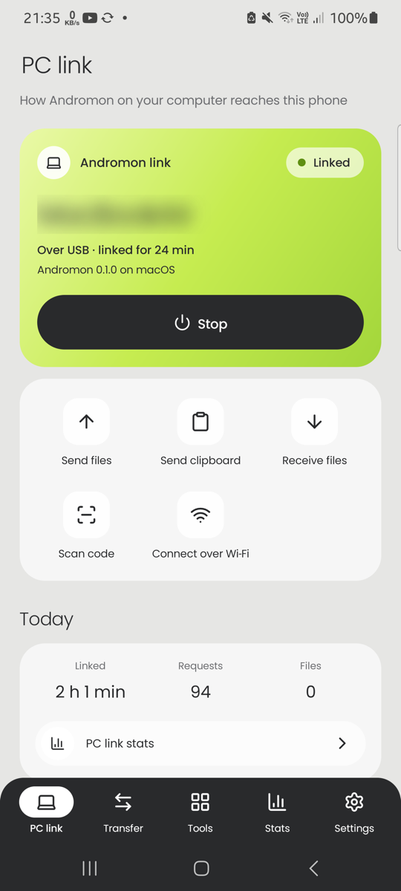
The screen the app opens on: the link to Andromon on your computer.
| Part | What it does |
|---|---|
| Green card | Linked (a computer is talking to the phone), Ready (the link is on and waiting) or Off. When linked, it shows the computer's name, whether it is connected over USB or Wi‑Fi, and for how long. Until Andromon has said its name, it says "Your computer". Start / Stop switches the link on or off. Andromon can also start it itself over USB. |
| Quick actions | Send files picks files and opens Transfer › Send. Send clipboard sends what is copied on the phone to the computer (or, when no computer is listening on the link, puts it in Transfer › Send to go over Wi‑Fi). Receive files opens Transfer › Receive. Scan code scans the code Andromon's Wi‑Fi transfer page shows. Connect over Wi‑Fi jumps to the Wi‑Fi card below. |
| Today | Time linked, requests from the computer and files moved today. PC link stats opens Stats › PC link. |
| Recent activity | What the computer did lately ("Read your messages", "Sent 3 files to Studio Mac"), newest first; repeats are counted instead of listed again. See all shows the last 40. |
| What the computer can read | How many messages, contacts and calls Andromon can see, and each data permission. Allow asks for the missing ones. If you refused one with "Don't ask again", Android won't ask any more: the row and the button then say App info, which opens the page where you can allow it. |
| USB cable | How unfolds the four steps: a cable that carries data, USB debugging on, click Connect in Andromon, tap Allow. |
| Wi‑Fi | After the one-time setup in Andromon (Use this phone without the cable), a single button turns the Wi‑Fi connection on and off. Before the setup it lists the steps (also for pairing by hand in Wireless debugging). If Developer options are off, it says how to turn them on (Settings › About phone › tap Build number seven times), with a button to About phone. Needs Android 11 or newer. |
Turn the Wi‑Fi connection off when you are done; it also switches itself off when the phone leaves the Wi‑Fi network or restarts. The activity list and the figures stay on the phone for 30 days; Settings › PC link › Clear link history removes them.
Tools
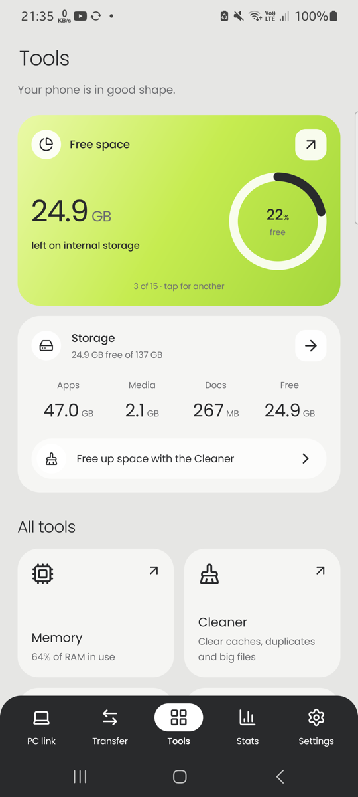
- The line under Tools sums up the phone's state ("Your phone is in great shape"). It comes from free storage, free memory and battery condition. When something costs points, it is listed on the green card with a link to the screen that helps.
- The green card shows one fact at a time (health, storage, memory, battery, uptime, network, installed apps, screen, Android version); tap it for the next. The arrow at its top right opens the screen that says more, when there is one.
- Storage shows what apps, media and documents use, and how much is free. The arrow opens the Storage screen (folder sizes); Free up space with the Cleaner opens the Cleaner.
- Each tile opens a tool and shows its current state (for example "46% of RAM in use").
Stats
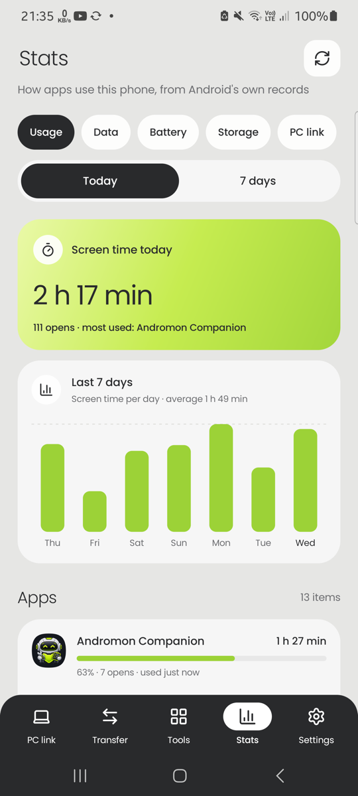
How apps use the phone, from Android's own records. The chips at the top choose the kind; Today / 7 days chooses the time where it applies. Each kind has a green card with the total, a bar chart and a list of apps with their share; tap an app for its details (the same as in Apps).
| Kind | What it shows | Good to know |
|---|---|---|
| Usage | Screen time and how often each app was opened, when it was last used, and screen time per day for the last 7 days. | An app counts while it is on screen; the home screen and the system bars don't count. Needs usage access. |
| Data | Mobile data and Wi‑Fi per app, and per day for the last 7 days. | As Android counts it, in 2-hour blocks: "Today" can include a little of late yesterday. Apps you uninstalled are grouped as "Removed apps". Needs usage access. |
| Battery | Each app's use since the last full charge, in mAh, as Android estimates it. | Android only shares this with privileged access (Settings › Privileged access); without it the screen says so and offers the setup. |
| Storage | App, data and cache size of every app, the biggest first. | Needs usage access. Caches can be cleared from Andromon on the computer (Apps › Clear app caches). |
| PC link | Sessions, time linked, requests by kind, files and bytes sent and received over Wi‑Fi, clipboard shares and the computers that connected. | Kept on the phone for 30 days. |
When usage access is off, Stats says so and offers Allow usage access.
Cleaner
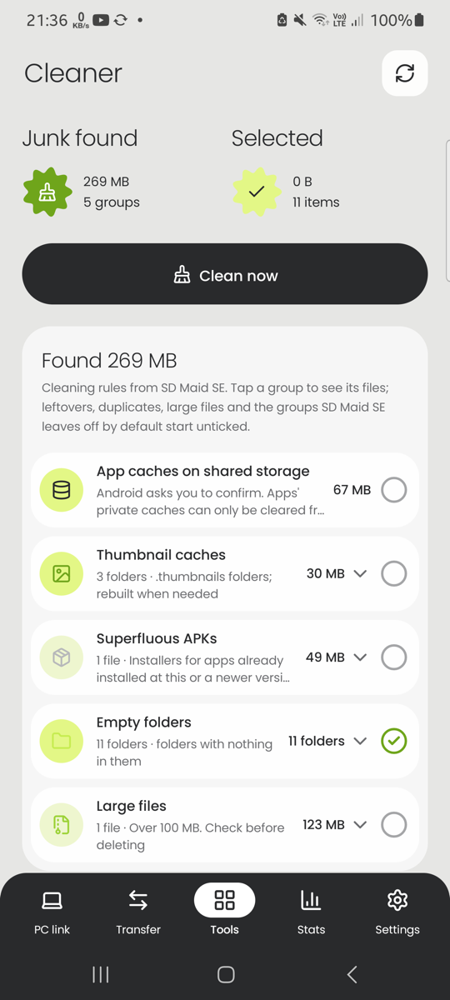
Finds files that can be deleted safely.
- The screen scans when it opens; the refresh button scans again.
- Junk found lists groups: app caches on shared storage, thumbnail caches, log and temp files, empty folders, leftovers of uninstalled apps, installers (APKs) you no longer need, old screenshots, duplicates and large files.
- Tap a group to see its files. Tick the groups (or single files) you want gone. Groups that could hold something you want (leftovers, duplicates, large files) start unticked.
- Clean now deletes what is ticked, after asking once more.
- Storage at the bottom shows how full the phone and each SD card are.
Good to know: apps' private caches, usually the largest part, can't be cleared by any app. Andromon on the computer can do it (Apps › Clear app caches). Which rules run is set under Settings › Cleaning rules, and the size that counts as a "large file" under Settings › Large files.
Network
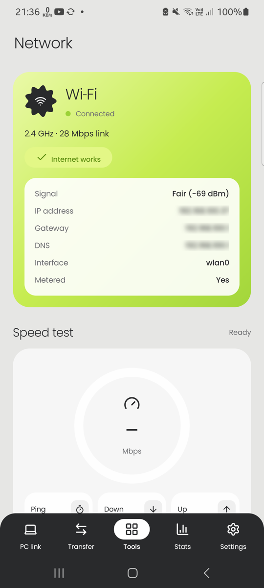
- The green card shows the connection (Wi‑Fi or mobile data), whether the internet works, signal, IP address, gateway, DNS and whether the connection is metered.
- Speed test measures ping, download and upload. It uses up to about 125 MB on Wi‑Fi and 35 MB on mobile data. Settings › Save data on speed tests always runs the shorter test.
- Ping checks how fast a host answers; DNS lookup shows the addresses behind a name.
Transfer (receive and send) is described for both apps under Wi‑Fi file transfer.
Memory
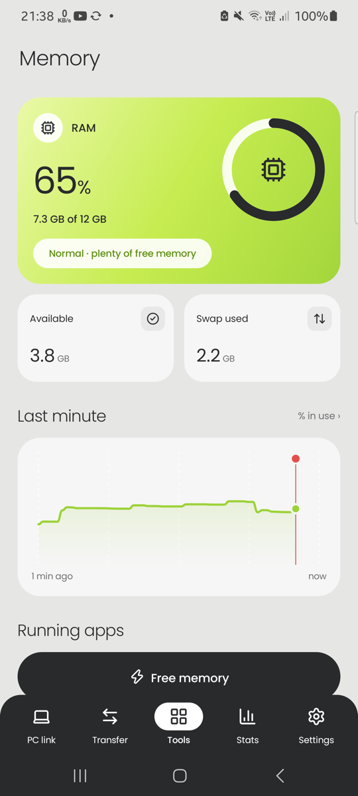
- The green card shows how much RAM is in use and a verdict ("Normal · plenty of free memory").
- Available and Swap used are the figures behind it; Last minute is a live chart.
- Running apps lists the apps in memory with their size and state (In use, Visible, Running, Recent, Cached). Stop force-stops one app; Free memory closes all background apps.
The running-apps list needs privileged access: Android doesn't show other apps' memory to normal apps. Without it, Boost closes background apps on Android 13 and older; Android 14 and newer don't allow even that.
Battery
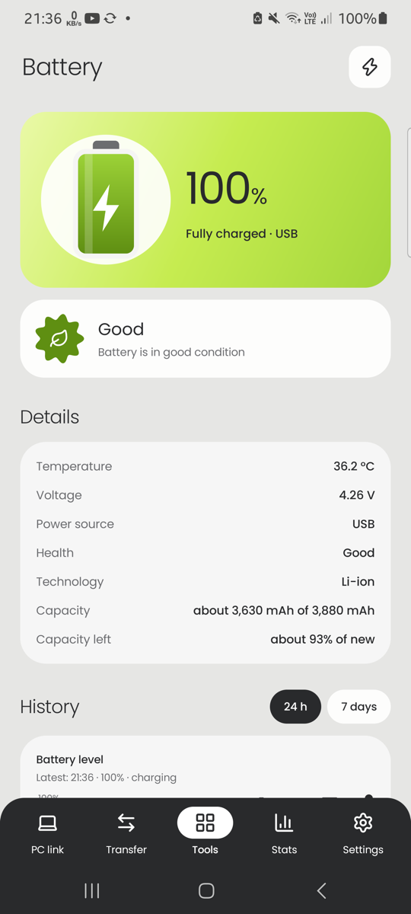
| Part | What it shows or does |
|---|---|
| Green card | Charge level and whether the phone is charging (with time to full on Android 9+). |
| Condition | Android's own verdict on the battery ("Good"). |
| Details | Temperature, voltage, power source, health, technology, charge cycles (Android 14+). |
| Battery Saver switch | Turns Android's Battery Saver on or off. If the app isn't allowed to change it, the Battery saver screen opens and says what is missing. |
| Battery saver tools | Opens the Battery saver screen. |
| Freezer | Opens the Freezer. |
| History | Charts of level and temperature over 24 h or 7 days, average drain per hour, when the phone was last full, and an estimate of the time left. The app samples about every 15 minutes, so the charts fill up over time. |
| App battery use | Android's estimate per app since the last full charge. Needs privileged access. |
Battery saver
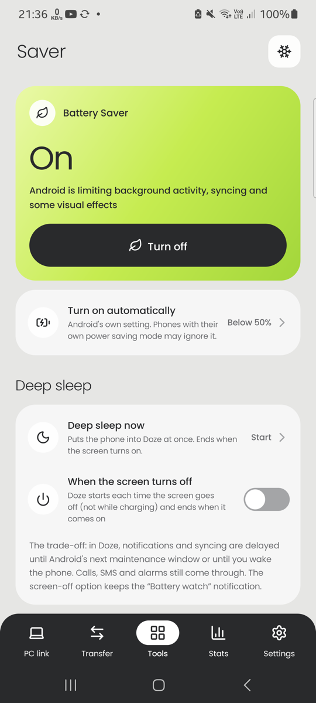
Each part says what it needs and is greyed out with the reason while that is missing.
| Part | What it does | Needs |
|---|---|---|
| Battery Saver (Turn on / Turn off) | Android's own Battery Saver: limits background activity. | Privileged access, or a permission Andromon grants over USB |
| Turn on automatically | Battery Saver switches on by itself below the level you choose. | The same |
| Deep sleep now | Puts the phone into Android's deep idle mode at once. Ends when the screen turns on. | Privileged access |
| When the screen turns off | Deep sleep every time the screen goes off (not while charging). | Privileged access |
| Charging | Charging current and power, a reminder at a charge level you choose (70–95%), a fully-charged alert and an overheating alert. | Notifications |
| Awake now | Apps that keep the phone awake, with Stop. | Privileged access |
| App limits | Per app: how much Android lets it run in the background (Active, Rare, Restricted) and a background restriction. | Privileged access |
Set up privileged access opens the right part of Settings.
Good to know: Android turns Battery Saver off while charging. Phones with their own power saving mode (Samsung and others) may ignore the switch; the screen says so. In deep sleep, notifications and syncing are delayed; calls, SMS and alarms still arrive.
Freezer
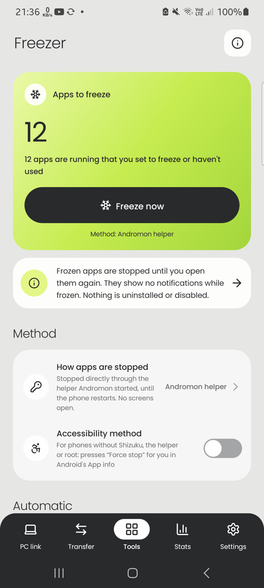
Stops apps that run in the background without being used. "Freezing" is the same as Force stop in Android's App info: the app stays stopped until you open it again. Nothing is uninstalled, and a frozen app shows no notifications.
| Part | What it does |
|---|---|
| Apps to freeze | How many apps are waiting to be frozen right now. Freeze now stops them. |
| How apps are stopped | The method in use: privileged access (silent, no screens), the accessibility method, or by hand (App info opens for each app and you press Force stop). |
| Accessibility method | For phones without privileged access: the app presses "Force stop" for you in App info. You also have to switch the service on in Android's Accessibility settings. |
| App list | Every app with a line saying why it will or won't be frozen. Tap an app to choose its mode. |
| Automatic | Freeze when the screen turns off (at once or after a delay) and when the battery drops below a level. Both need privileged access to act silently. |
| Shortcuts | Add a Freeze now shortcut to the home screen or a quick-settings tile. |
Modes per app
| Mode | Meaning |
|---|---|
| Always | Frozen every time, whenever it is running. |
| When unused | Frozen only if you haven't used it for a while (7 days by default). Needs usage access. This is the default for apps you installed. |
| Never | Left alone. System apps, the keyboard, the phone and SMS apps start here. |
Apps you are using right now (on screen, playing music, navigating) are skipped. Freezing an app you open many times a day costs more battery than it saves.
Apps
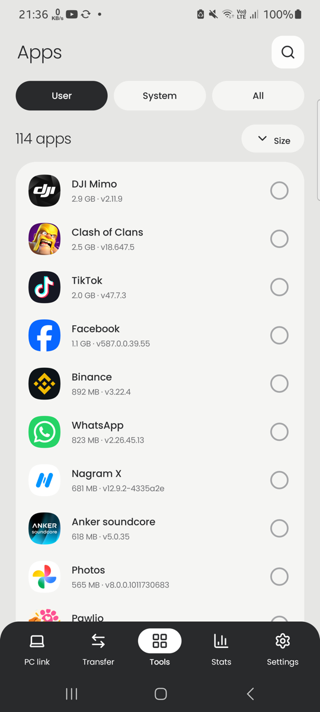
- User / System / All chooses the list; the magnifier searches; the Size button changes the order (size, name, install date, last update, screen time, least recently used).
- Tap an app for its details: version, install and update dates, where it was installed from, app/data/cache size, screen time and last use.
- Actions per app: Open, App info, Play Store, Export APK (to
Download/Andromon/APKs) and Uninstall. - Tick the circles to uninstall several apps in a row. Android asks for each one.
Sizes and usage figures need usage access (Andromon allows it at install).
Storage
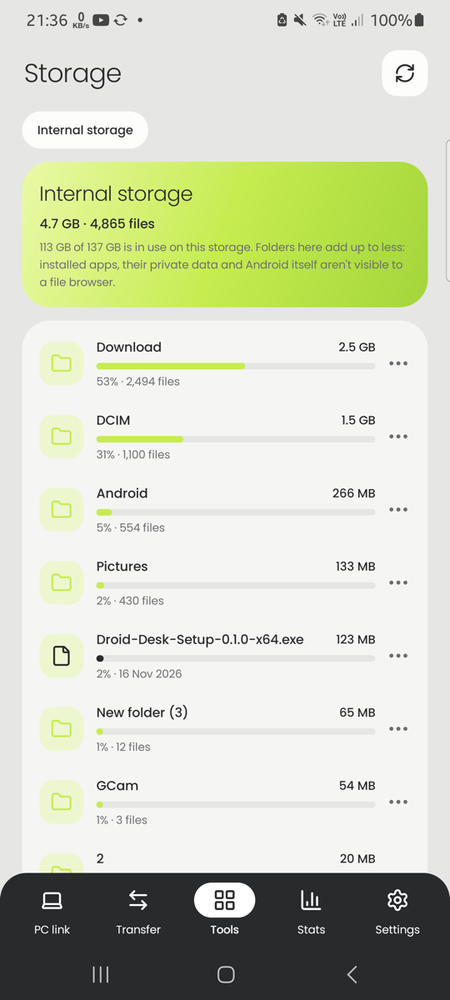
A folder browser that shows what takes up space.
- Folders and files are listed largest first, each with a bar for its share.
- Tap a folder to go in; Back goes up. Tap a file to open it.
- The three dots delete a file or folder after a confirmation that names its path and size. Deleted items don't go to a recycle bin.
- With an SD card, a chip at the top switches between the storages.
Installed apps and Android itself aren't visible to a file browser, so the folders add up to less than "used".
Permissions
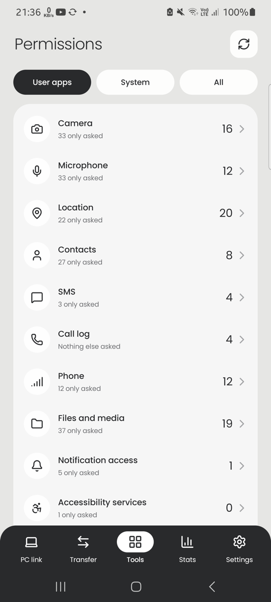
Shows which apps may use sensitive things.
- One row per group: Camera, Microphone, Location, Contacts, SMS, Call log, Phone, Files and media, Notification access, Accessibility services, Device admin, Display over other apps, Install unknown apps, All files access.
- The number is how many apps are allowed; the line below says how many only asked.
- User apps / System / All chooses which apps are counted.
- Tap a group to see its apps. Tap an app to open Android's App info, where you can take the permission away.
- With privileged access, the list also shows when each app last used the camera, microphone, location, contacts, SMS and call log.
Hardware test
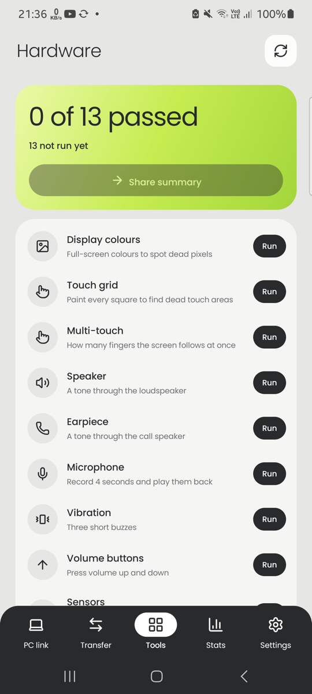
A checklist of 13 guided checks. Tap Run on a row.
| Check | How it works |
|---|---|
| Display colours | Full-screen white, black, red, green and blue to spot dead pixels. |
| Touch grid | Paint every square to find dead touch areas. |
| Multi-touch | Counts how many fingers the screen follows. |
| Speaker, Earpiece | Play a tone; you say whether you heard it. |
| Microphone | Records 4 seconds and plays them back. Nothing is saved. |
| Vibration, Volume buttons, Flashlight | Try each and confirm. |
| Sensors | Live values of the motion, light, proximity and other sensors. |
| Cameras, Wi‑Fi / Bluetooth / GPS / NFC, Fingerprint | Lists what the phone reports having. |
Where the phone can tell the result, it fills it in; otherwise you tap Passed or Failed. Share summary sends the results as text.
Settings
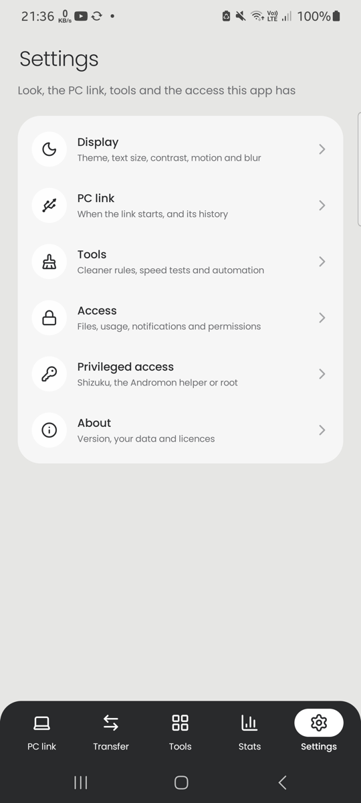
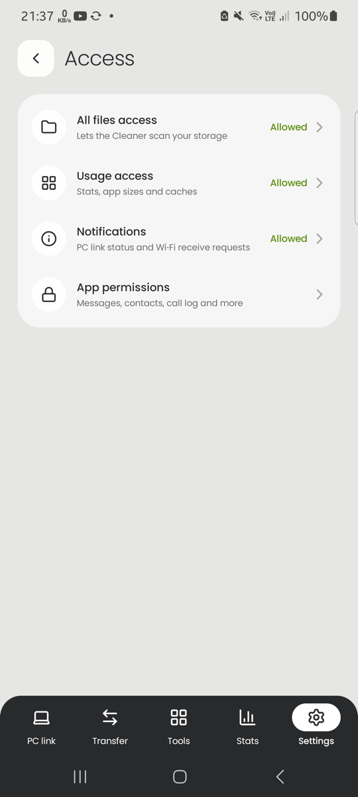
| Section | Option | What it does |
|---|---|---|
| Appearance | Theme | Light, dark, or the same as the phone. |
| Blur personal data | Off by default. On: names (computers, Wi‑Fi devices, this phone's name), IP addresses and text you send are blurred on every screen, so screenshots of the app are safe to share. Lines that mix normal text with personal data (ping output, transfer status) blur only when they contain some. Tap a blurred value to see it for a few seconds. Android 11 and older cover it with a grey bar instead of a blur. | |
| PC link | Start when the app opens | On: opening the app also starts the link to Andromon. Andromon can always start the link over USB, even when this is off. |
| Clear link history | Removes the PC link screen's recent activity, the PC link figures in Stats and the names of the computers that connected. | |
| Tools | Cleaning rules | Which of the Cleaner's rules run (17 in all). |
| Large files | The size from which the Cleaner lists a file as large (50 MB to 1 GB). | |
| Save data on speed tests | Always runs the shorter speed test, also on Wi‑Fi. | |
| Access | All files access, Usage access, Notifications, App permissions | The state of each access the app uses. Tap one to open its Android setting. Stats needs Usage access. |
| Privileged access | In use, Shizuku, Get Shizuku, Prefer, Finish setup | See the next section. |
| About | Privacy, Licence, Third-party notices | What the app does with data, and the licences. |
Privileged access (Shizuku, helper, root)
Some features need more rights than Android gives a normal app: the Memory screen's running apps, the Freezer's silent freezing, Deep sleep, app limits, per-app battery use and last-use times in Permissions. The app can borrow these rights in three ways:
| Way | How to turn it on | Lasts |
|---|---|---|
| Shizuku | Install the free Shizuku app and start it (its own guide explains how; Andromon's Shizuku page also has Start Shizuku). Then tap Grant permission in the companion's Settings. No computer is needed afterwards. | Until the phone restarts (always on rooted phones) |
| Andromon helper | In Andromon on the computer: Shizuku › Phone RAM manager. | Until the phone restarts |
| Root | On rooted phones: Memory › Use root instead. | Until the phone restarts |
Under Settings › Privileged access:
- In use shows which way is active right now, or "None", and why, in full.
- Shizuku shows its state: not installed, not running, waiting for permission, or ready.
- Prefer chooses between Automatic (Shizuku first), Shizuku, or the helper/root.
- Finish setup without a computer lets the app grant itself, through Shizuku, the permissions Andromon would normally grant over USB.
Whichever way is used, the app can only run a fixed list of commands (list processes, stop an app, read battery statistics and so on). It can't touch other apps' private data.
Notification buttons and quick-settings tiles
- "Connected to Andromon" notification: Stop ends the link; Send clipboard to PC copies the phone's clipboard to the computer.
- "From your computer" notification: appears when you send a link or text from Andromon. Tapping it opens the link or copies the text.
- Find my phone: when started from Andromon, the phone rings at full volume and shows Found it.
- Receive notification: shows progress and Accept / Decline for incoming transfers.
- Quick-settings tiles (add them by editing the quick-settings panel): PC link, Receive files, Send clipboard to PC and Freeze now.
Privacy
- Messages, contacts, the call log, calendar and notifications go only to Andromon on computers you connected or paired, through the adb link.
- The app uses the network only for the Network screen's tests and for Wi‑Fi receive and send while you have them on.
- There are no accounts, no ads and no analytics. The app is free software (GPL-3.0); the licences are under Settings › About.
Part 4Both together
Wi‑Fi file transfer
Moves files between the phone and the computer over Wi‑Fi, in both directions, with no cable and no debugging. Turn it on on both sides: the Wi‑Fi transfer page in Andromon and the Transfer screen in the companion (Receive).
On the computer
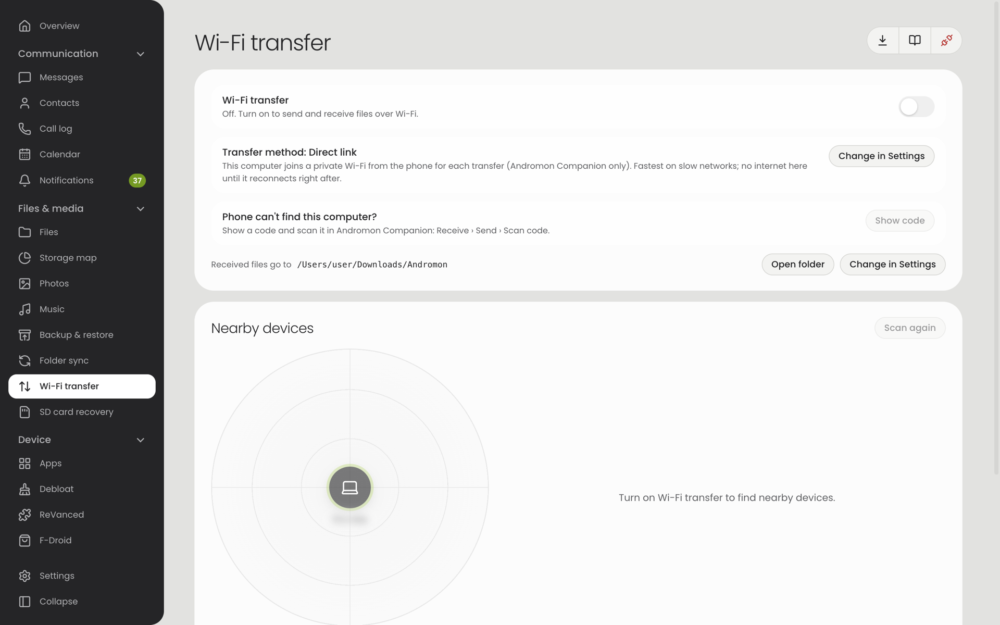
Sends and receives files over the local network, with no cable and no debugging. Works without a connected phone.
| Option | What it does |
|---|---|
| Wi‑Fi transfer switch | Makes this computer visible to phones on the same Wi‑Fi. Nothing listens on the network while it is off. |
| Transfer method | Same Wi‑Fi sends through your router. Direct link has the computer join a private Wi‑Fi the phone opens for the transfer (faster for big files; only with the companion). Auto picks Direct link for large transfers on slow Wi‑Fi. |
| Received files go to | The folder for incoming files; Change… picks another, Open folder shows it. |
| Nearby devices | A radar with this computer in the middle and every phone that is ready to receive around it, next to a list of the same devices with their details. Click a device on the radar (or Send files… in the list), or drop files on it. While files move, dots flow between the two and a ring round the device fills up. |
On the phone, open the companion's Receive screen and turn receiving on. Every incoming transfer has to be accepted before anything is saved.
On the phone
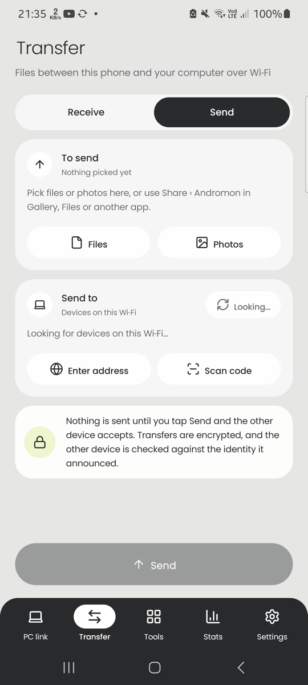
Moves files between the phone and a computer over Wi‑Fi, without a cable. The switch at the top chooses Receive or Send; Transfer opens on the side you used last.
Receive
| Option | What it does |
|---|---|
| Turn on receiving | Makes the phone visible to computers on the same Wi‑Fi. Nothing listens on the network while it is off. It turns itself off after 30 minutes without transfers. |
| Saved to | Received files go to Download/Andromon. |
| Direct link | Lets the computer join a private Wi‑Fi the phone opens just for the transfer. Faster for big files than going through the router. |
| Received | The files you received; tap one to open it. Downloads opens the folder. |
Every transfer asks first: Accept or Decline, on the screen or in the notification. Nothing is saved without your consent.
Send
- Pick Files or Photos, or use Share › Andromon from the gallery or any other app.
- The screen lists the computers it finds on the Wi‑Fi. Refresh searches again; Enter address adds one by IP address (the × next to the field closes it again); Scan code reads the code Andromon shows.
- Tap a computer, then Send. The Send button always stays just above the bottom bar. The computer has to accept.
On the computer, open Andromon's Wi‑Fi transfer page and turn it on.
If something doesn't work
| Problem | Try this |
|---|---|
| No Android phone found | Use a cable that carries data (some only charge). Check that USB debugging is on. Close other phone tools (Android Studio, scrcpy, another adb). On Windows, phones with Android 9 or older may need the maker's USB driver. |
| The phone never asks "Allow USB debugging?" | Unplug and plug in again with the phone unlocked. In Developer options, Revoke USB debugging authorisations, then reconnect. |
| A page marked Companion says the companion is missing or outdated | Click Install companion (or Update). It takes a few seconds over the cable. |
| The phone isn't listed for Wi‑Fi | Both devices must be on the same Wi‑Fi. Wireless debugging switches itself off when the phone leaves the network or restarts: turn it on again in the companion's PC link screen. On guest or office networks use Connect by address. |
| An install is refused | Look at the phone: it may be asking to allow the install ("Install via USB", Play Protect). "Signed with a different key" means the app is already there from another source: uninstall it first. |
| Screen mirror has no sound | Sound needs Android 11 or newer. |